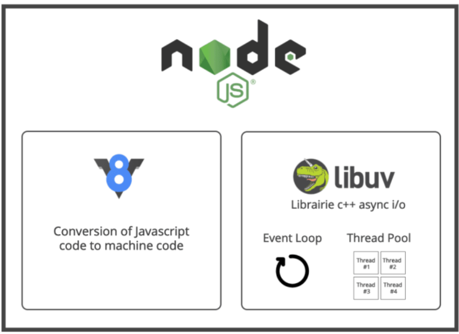
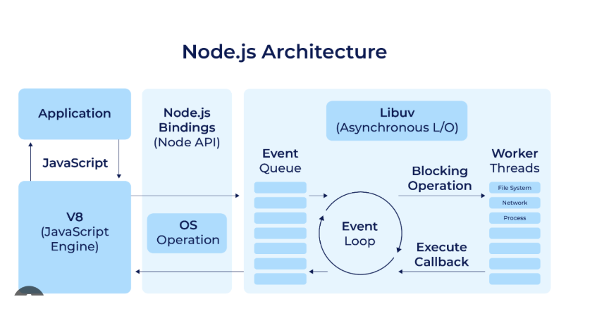

V8 Engine and libuv
The two main parts of Node.js are the V8 engine and libuv.

- libuv gives Node.js event-driven, asynchronous I/O. It implements the event loop and a thread pool so Node can handle many file and network operations concurrently. This is the core of Node's non-blocking behavior.
- The thread pool runs tasks in parallel. It handles heavier work such as filesystem access, cryptography, and demanding processes like video conversion.
Official site: libuv.org
Event loop backends across operating systems
The docs describe a full-featured event loop backed by
epoll, kqueue, IOCP, and event
ports. libuv's event loop is a control center that picks the right OS
mechanism for asynchronous I/O.
libuv provides a robust event loop that works with system-level asynchronous I/O: reading and writing files, database operations, and more.
There are videos that walk through creating your own JavaScript runtime using V8 and libuv.
When is Node.js multithreaded?
Node's main execution thread is single-threaded. libuv offers multithreading when work is offloaded to its thread pool.
Guide: Don't Block the Event Loop

- Node offloads certain I/O-intensive and CPU-intensive tasks to a thread pool managed by libuv.
- DNS lookups, filesystem work, cryptographic computations, and zlib compression can run in parallel without blocking the main event loop.
- For those tasks, Node uses its worker pool and behaves in a multi-threaded way.

Architecture layers

- Application code — the JavaScript you write.
- Node Core — the JavaScript runtime and the basic modules that make Node a server-side platform.
- Binding layer — the bridge between JavaScript and internal C/C++ code. It translates JS calls into system-level actions.
-
Node standard library — modules such as
fs,os, andhttp. - libuv is written in C.
- V8 is written in C++.
- OpenSSL — cryptography for SSL/TLS and secure network communication.
- c-ares — a C library that performs DNS requests.
- http-parser — a lightweight C library used to parse HTTP messages.
Order of execution

- Application code execution — you write JavaScript that V8 executes.
- V8 engine — compiles JavaScript into machine code.
- Node bindings — bridge your JavaScript to Node's C/C++ core.
- libuv and other C/C++ modules — handle I/O and work such as cryptographic functions.
- Callback to V8 — when I/O finishes, results go back to V8, usually through callbacks.
- Application code — the callback or result returns to your app so it can continue or respond to the client.
Event loop
Think of Node.js as a post office that never closes and handles different kinds of tasks.
- Starting the day (initialization) — when Node starts, it is like the post office opening and preparing to sort mail.
- Sorting mail (phases) — different sections handle local, express, and international mail. Node has phases that handle specific kinds of tasks.
- Waiting for mail trucks (poll phase) — Node waits for events (for example data from a database) and handles tasks that are ready.
-
Special deliveries (check phase) —
setImmediate()callbacks are handled right away after poll.
Event loop docs: Timers, setImmediate, and process.nextTick
Flow from the Node.js docs
setImmediate() callbacks.
socket.on('close', ...).
setTimeout() / setInterval() callbacks.
Summary
- Node uses an event loop for non-blocking I/O by offloading work to the system kernel whenever possible.
- Phases: timers, pending callbacks, idle/prepare, poll, check, and close callbacks.
- Timers schedule callbacks after a minimum threshold.
-
process.nextTick()runs immediately after the current operation completes. - The poll phase decides when to execute I/O tasks and their callbacks.
-
setImmediate()runs after I/O events in the current loop iteration (after poll).
process.nextTick() runs right after the current
operation. setImmediate() waits until after the current
event-loop phase (poll). They are not interchangeable.
Code
Create a file named eventLoop.js:
console.log('Start');
process.nextTick(() => {
console.log('Next Tick');
});
setImmediate(() => {
console.log('Set Immediate');
});
console.log('End');
The process.nextTick callback runs right after the
current script (Start and End), even before
setImmediate, which waits until the next cycle of the
event loop.
Use case: keep heavy work from blocking
For long-running synchronous computations, break the work into smaller
chunks and schedule them with process.nextTick. That
keeps the event loop responsive.
Unoptimised
function heavyComputation(iterations, callback) {
let count = 0;
function compute() {
for (let i = 0; i < iterations; i++) {
count++;
if (count >= iterations) {
callback();
return;
}
}
}
compute();
}
heavyComputation(10000, () => {
console.log('Heavy computation complete');
});Optimised
function heavyComputation(iterations, callback) {
let count = 0;
function compute() {
for (let i = 0; i < 1000; i++) {
if (++count >= iterations) {
callback();
return;
}
}
process.nextTick(compute);
}
compute();
}
heavyComputation(10000, () => {
console.log('Heavy computation complete');
});Features of the event loop
- Continuous loop — it keeps checking for async tasks, processing them, and waiting for more. That is Node's non-blocking model.
- Call stack and event queue — callbacks run only when the call stack is empty.
- Asynchronous handling — I/O, timers, callbacks, promises, and async/await all go through the loop so many tasks can run without blocking the main thread.
- FIFO — the oldest task in a given queue runs first.
- Built on libuv — libuv provides I/O and hides OS differences.
Phases
-
Timers —
setTimeout()andsetInterval() -
I/O / pending callbacks — almost all I/O callbacks
except timers and
setImmediate - Poll — retrieve new I/O events and run I/O callbacks
-
Check —
setImmediate() -
Close callbacks — for example
socket.on('close', ...)
Scaling Node.js applications
Cloning with the cluster module
Cluster is a core Node feature. It runs multiple worker processes that share the same server port and spread incoming requests across CPU cores.
Each process is independent. Inter-process communication (IPC) passes messages and server handles between the main process and children. Two load-distribution strategies:
- The main process listens on a port, accepts connections, and assigns them to children in round-robin fashion.
- The main process delegates the port so a child listens directly.
Decomposing into microservices
Split the app into smaller independent services so different parts can be scaled on their own.
Cluster vs child processes
- Cluster — spawn multiple Node processes and share load across CPU cores. Shared state is not direct; use IPC.
- Child process — run system commands, talk to other apps, or handle heavy work (for example large files) without blocking the event loop.
Child process methods:
-
spawn— launch a command and stream output. Good for long-running processes. -
exec— run a command in a shell and buffer the output. Best for small output. -
fork— a specialspawnfor new Node processes. Use it for workers that share the same codebase.
Cluster example
const cluster = require("cluster");
const http = require("http");
const os = require("os");
const numCPUs = os.cpus().length;
if (cluster.isMaster) {
console.log(`Master ${process.pid} is running`);
for (let i = 0; i < numCPUs; i++) {
cluster.fork();
}
cluster.on("exit", (worker, code, signal) => {
console.log(`Worker ${worker.process.pid} died. Forking a new worker...`);
cluster.fork();
});
} else {
http
.createServer((req, res) => {
res.writeHead(200);
res.end(`Hello from Worker ${process.pid}\n`);
})
.listen(8080);
console.log(`Worker ${process.pid} started`);
}- Master process — forks one worker per CPU core and replaces a worker if it dies.
- Worker processes — independent Node processes sharing port 8080. Incoming requests are handled by one of the workers (you can see which from the process id).